1. タイポグラフィ
1-1. 書体の種類
- 【明朝体／セリフ書体】
-
文字の端に「セリフ（うろこ）」と呼ばれる飾りがあり、横線よりも縦線のほうが太い書体の総称。欧文書体であるセリフ書体は「ローマン体」とも呼ばれる。
可読性に優れており、新聞や教科書などの長文や、書籍の本文などで広く利用されている。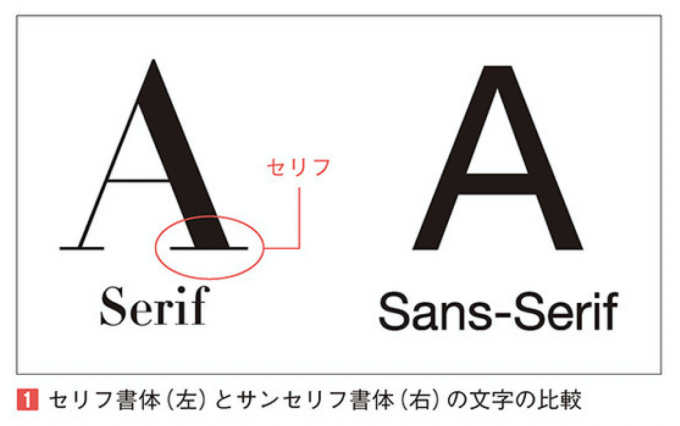
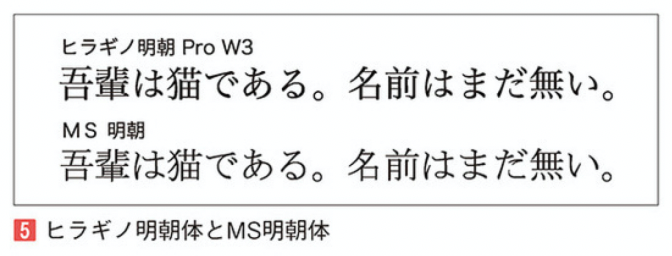
明朝体やセリフ書体の多くは、品格、権威、歴史的、信頼感、高級感などの印象を与える。
- 【セリフ書体の分類】
-
セリフ書体の中でも時代ごとに造形が異なり「ヴェネチアン・ローマン」「オールド・ローマン」「トランジショナル・ローマン」「モダン・ローマン」に分類される。
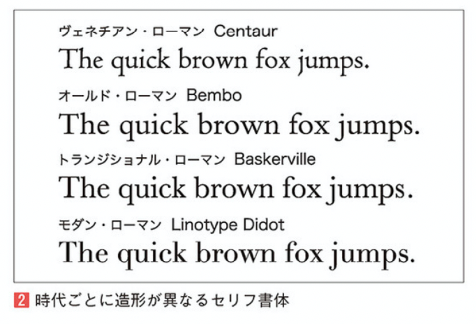
- 【ゴシック体／サンセリフ書体】
-
「セリフ（うろこ）」がなく、縦横の線の太さが均一な書体の総称。
「黒く」「目立って」見えるため、小さな文字でも視認性が高く、広告や看板、強調したいタイトルや見出しなどによく使われる。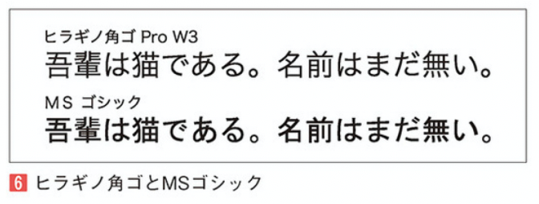
ゴシック体やサンセリフ書体は普遍性があり、力強さ、柔らかさ、優しさ、安定感と様々な印象を持っている。
- 【サンセリフ書体の分類】
-
サンセリフ書体も大きく分けて「グロテスク・サンセリフ」「リアリスト・サンセリフ」「ヒューマニスト・サンセリフ」「ジオメトリック・サンセリフ」に分類される。
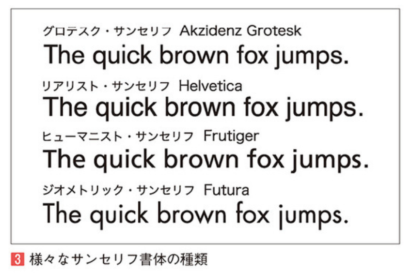
- 【その他の書体】
-
その他にも、手書きのストロークに基づいたスクリプト書体。字幅が狭く黒みが強いブラックレター書体。看板などに用いるために作られたインパクトの強いディスプレイ書体。セリフがあり、横と縦の線が同じくらい太いスラブセリフ書体などがある。
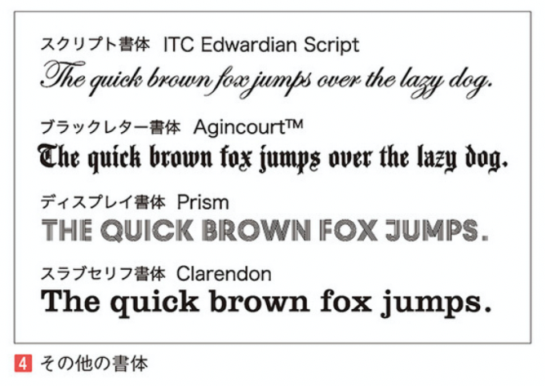
1-2. 書体ファミリー
- 【ファミリーとは】
-
同じコンセプトのデザインで、主にウェイト（太さ）のバリエーションを持った書体をまとめて「ファミリー」と呼ぶ。欧文書体の場合、ウェイトのバリエーション以外に、斜体や横幅が狭く設計されたコンデンス（長体）、広く設計されたエクステンド（平体）もファミリーに含まれることがある。
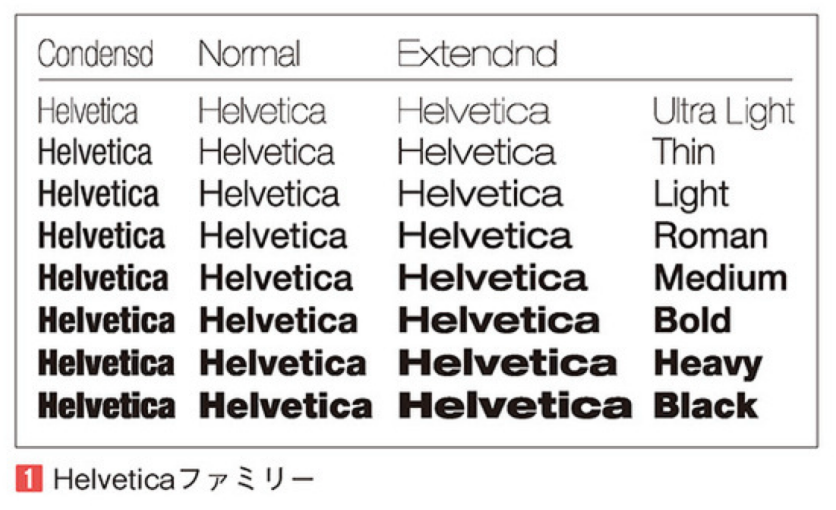
- 【ウェイト】
-
ウェイトのバリエーションは書体によって異なり、細い書体の「Light」、太い書体の「Bold」、その中間の「Regular」を中心に展開しているものから、極細の「Ultra Light」から極太の「Black」までを展開している書体もある。
和文書体の場合、ウェイトの種類を「W3」「W6」のように数字で表すことが多い。
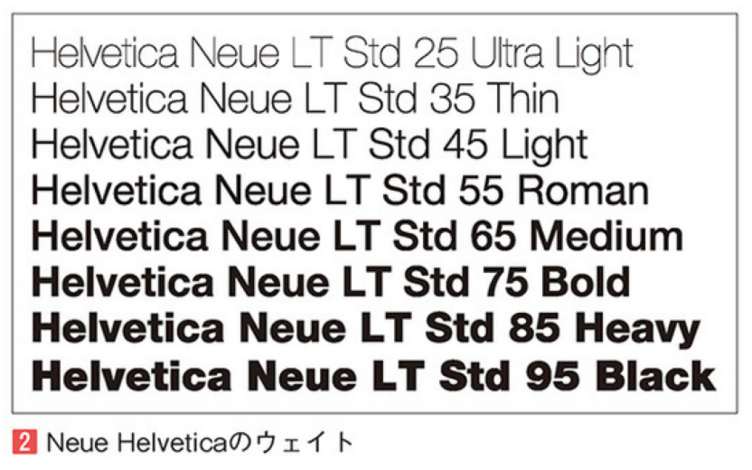
- 【イタリック】
-
一般的にセリフ書体を斜めにしたものをイタリック体（斜体）と呼び、新たに見やすくデザインされている。サンセリフ書体では「oblique（オブリーク）」と呼ばれ、こちらはただ斜めにしただけのものでる。
サンセリフ書体でも「oblique」でなく「italic」という名称になっているものは、その違いがある。
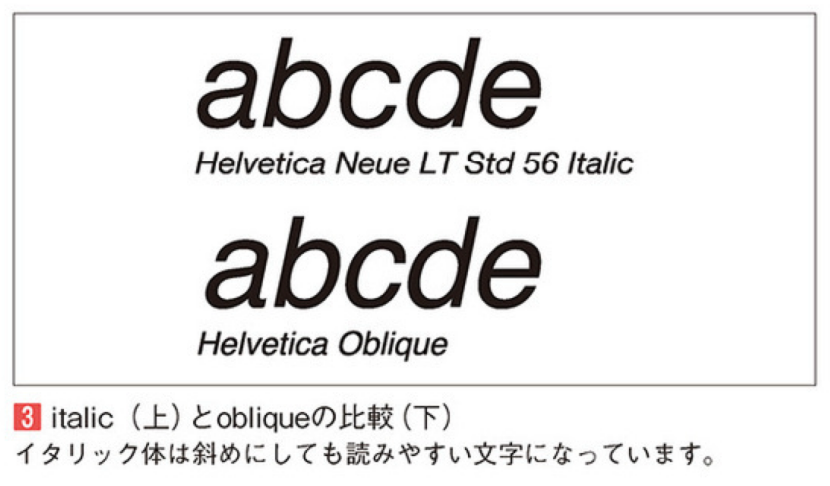
- 【コンデンス】
-
横幅が狭く設計された書体をコンデンス（長体）と呼ぶ。単純に横幅を狭くしただけでなく、可読性を保つためにデザインされた書体である。
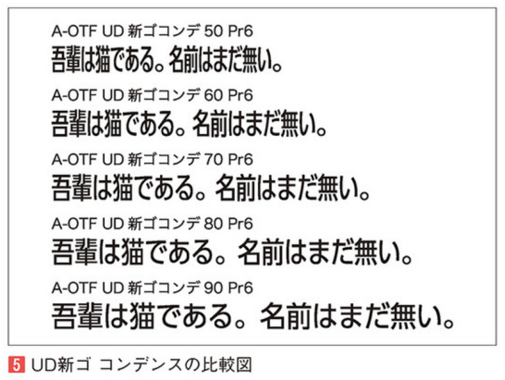
1-3. 本文の組版
- 【ベタ組み】
-
和文書体の文字は「仮想ボディ」と呼ばれる正方形の枠内に収まるようにデザインされている。この仮想ボディの正方形を隙間なく並べて文字を組むことを「ベタ組み」という。
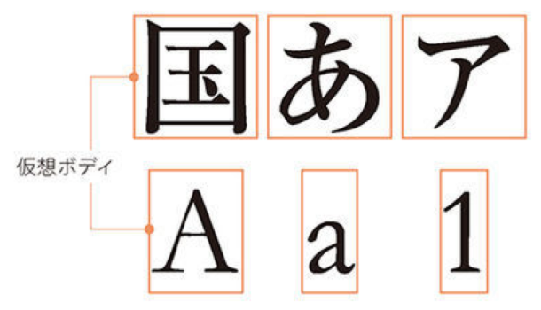
仮想ボディの大きさは一律であるため、ベタ組みのままの文章は画数の少ない文字、特にひらがなやカタカナの左右に不自然な余白が生じてしまう。
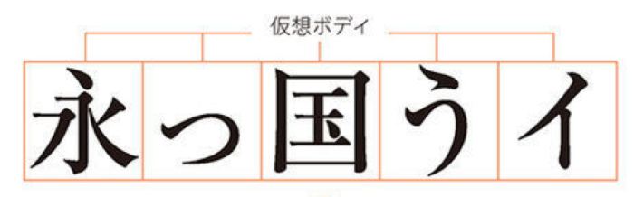
- 【カーニング】
-
文字間を調整するテクニックのことを「カーニング」といい、間隔を狭くすることを「ツメ組み」、広げることを「アケ組み」という。
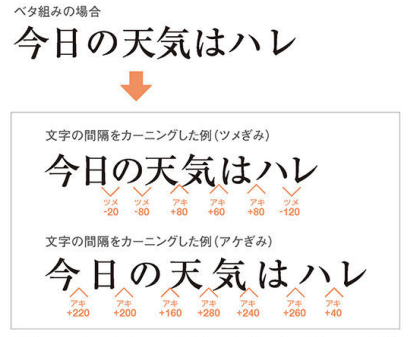
- 【プロポーショナルフォント】
-
プロポーショナルフォントとは、文字幅の情報があらかじめ設定されている書体で、欧文書体に多く見られる。入力時に文字間が自動的に調整されるため、入力後に調整しなくてもバランスの良い文字列になる。
それに対して、文字幅が均等な書体のことを「等幅フォント」といい、入力した状態では文字間がバラバラになることがある。
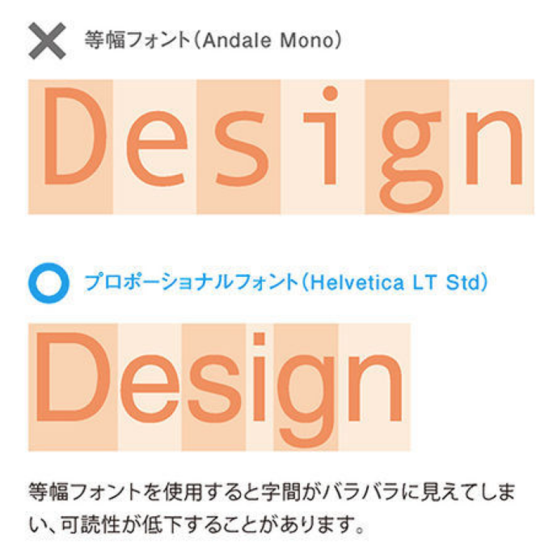
- 【アンチエイリアス】
-
エッジ（文字などの縁）が階段状に見えることをエイリアスといい、解像度が低すぎる画像で発生する。
境界にあるピクセルのカラーを平均化して、デジタル画像の縁のギザギザを滑らかにすることをアンチエイリアスという。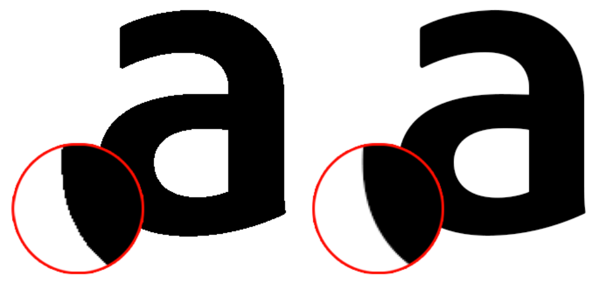
1-4. 和文の中の欧文
日本語と英数字が混在している文章のことを「和欧混植」という。和欧混植の文章をデザインする際のポイントは以下の通り。
- 和文書体に合う欧文書体を選ぶ。
- 欧文書体の文字の大きさを調整する。
- ベースラインを揃える。
- 【和文書体に合う欧文書体を選ぶ】
-
欧文書体を選ぶ際の基準は、和文書体が「明朝体」なら「セリフ書体」、「ゴシック体」なら「サンセリフ体」を選択し、線の太さやセリフの雰囲気が似たものを選ぶと良い。
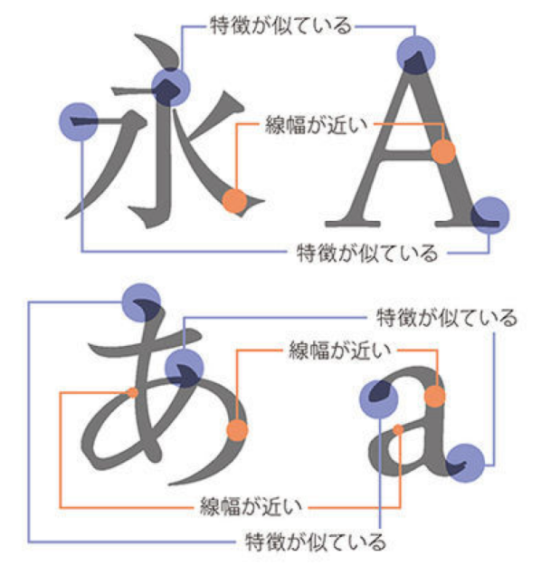
- 【欧文書体の文字の大きさを調整する】
-
和文書体と欧文書体では文字そのものの構造が異なるため、同じ文字サイズであっても、欧文書体のほうが小さくなる。1つの目安として、和文書体に対して欧文を110％程度拡大すると綺麗に揃うことが多い。
- 【ベースラインを揃える】
-
文字を並べる際の基準線のことを「ベースライン」という。横組みの場合は、文字の並びがベースラインに揃っていることが基本のため、欧文書体を和文書体のベースラインに揃える必要がある。
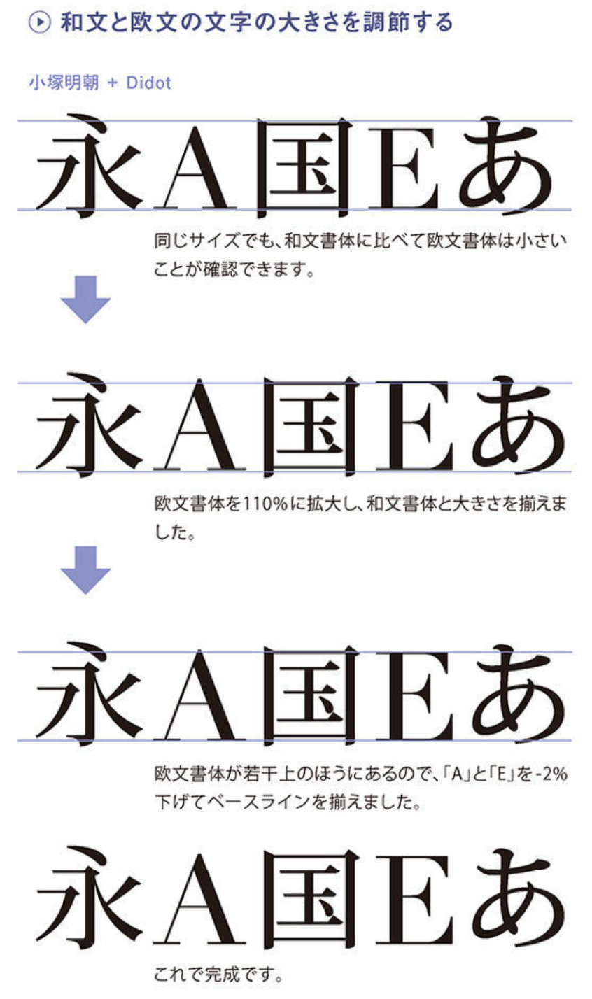
1-5. Webフォント
- 【Webフォントとは】
-
閲覧しているPCにフォントデータがなくても、サーバ上からフォントデータを呼び出し、そのフォントを表示させる仕組み。画像にすることなく、テキスト状態のままフォントを指定でき、拡大しても文字はボケることはない。読み込みに時間がかかるというマイナス面もある。
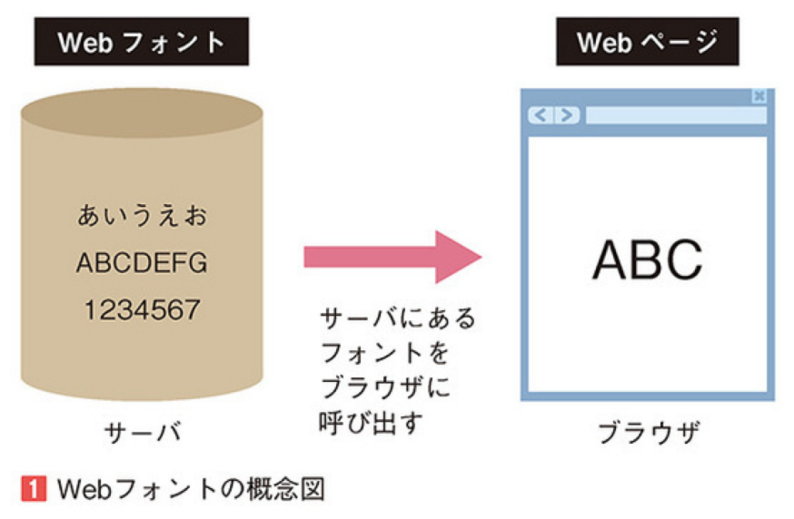
- 【Webフォントのフォーマット】
-
Webフォントのフォーマットは「WOFF」「WOFF2」「TTF」「EOT」「SVG」といった種類がある。
以前は各々で対応しているブラウザが異なっており分岐をさせて読み込んでいたが、最近では「WOFF（Web OpenFont Format）」のみで十分となってきている。
- 【サブセット化】
-
ページで使う文字だけを抜き出したフォントデータを用意することをサブセット化という。使う文字が限られているのでかなり容量が削減でき、読み込みのストレスを減らすことができる。
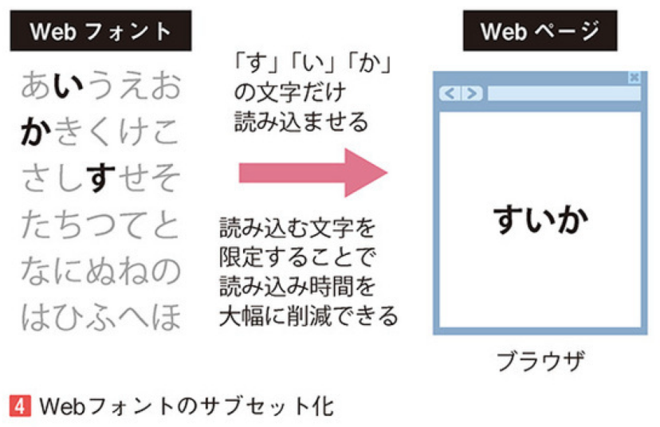